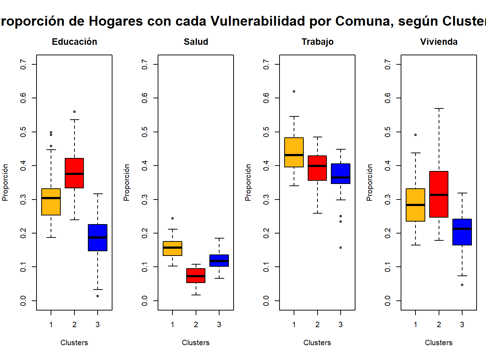
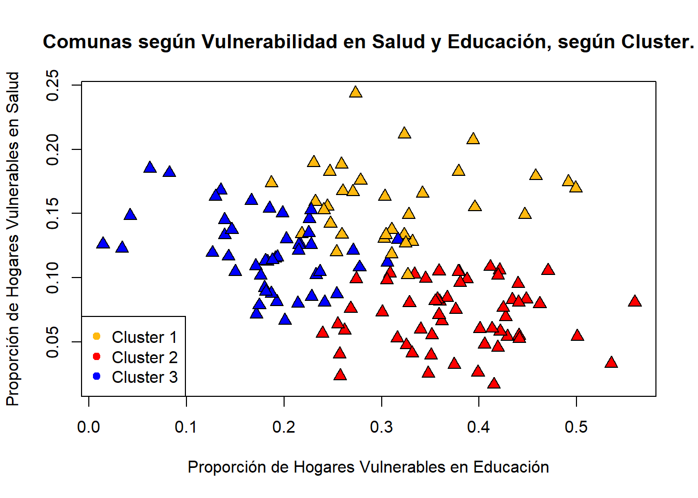
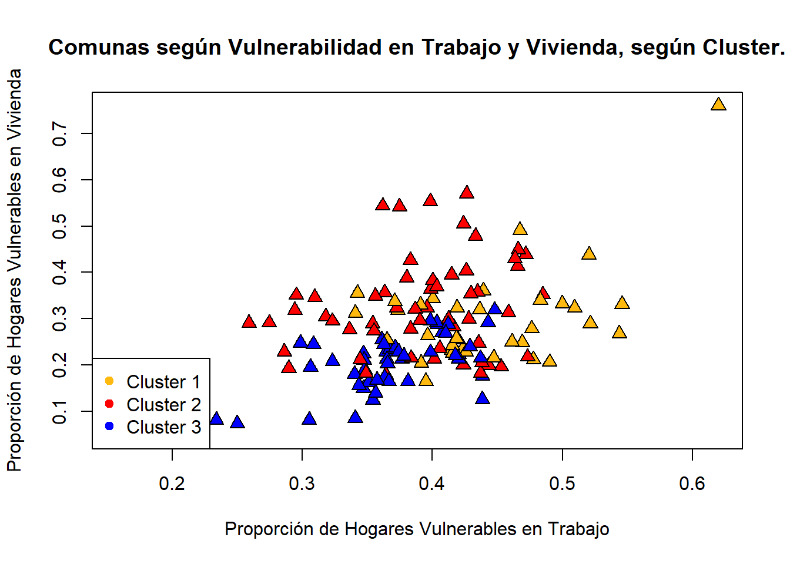
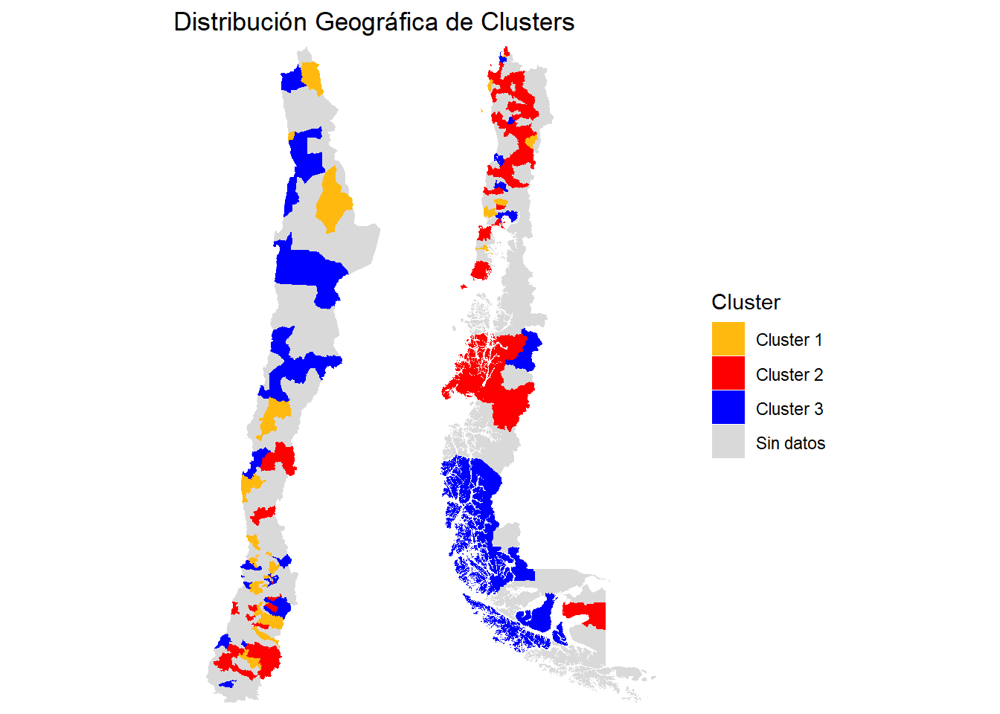

| Dimensión | Media | Mínimo | Q1 | Q2 | Q3 | Máximo |
|---|---|---|---|---|---|---|
| Educación | 0.29 | 0.01 | 0.22 | 0.30 | 0.38 | 0.56 |
| Salud | 0.11 | 0.02 | 0.08 | 0.11 | 0.14 | 0.24 |
| Trabajo | 0.40 | 0.16 | 0.36 | 0.40 | 0.43 | 0.62 |
| Vivienda | 0.28 | 0.05 | 0.21 | 0.26 | 0.33 | 0.76 |
Segmentación de comunas chilenas. Clusters según indicadores de Pobreza Multidimensional.
Estadística
Machine Learning
Clusters
Clusterización de comunas usando datos de la Encuesta Casen.
Nota técnica: Este análisis cubre únicamente a 139 de las 346 comunas del país. Dichas comunas son elegidas de manera que se cubra al menos el 80% de las viviendas y la población de cada región.
Introducción
El uso de clusters es una técnica no supervisada de Machine Learning utilizada para identificar grupos y patrones ocultos. Un uso habitual es la segmentación de clientes en el retail para canalizar campañas de marketing.
En este análisis se crean clusters de comunas chilenas de acuerdo a la proporción de hogares que presentan alguno de los cuatro componentes principales utilizados en la medición de pobreza multidimensional, i.e. Educación, Salud, Trabajo y Vivienda. Los datos utilizados son de la Encuesta Casen del 2024.
Se utilizan 139 comunas como unidad de análisis, para ellas se estima la proporción de hogares que presentan alguna vulnerabilidad. Por ejemplo, en la comuna de Santiago un 8% de los hogares presenta vulnerabilidad Educacional, 18% en Salud, un 31% es vulnerable en la dimensión de Empleo y un 25% se considera vulnerable con respecto a la dimensión de Vivienda.
A nivel nacional, de acuerdo con la siguiente tabla, en promedio un 40% de los hogares son vulnerables en la dimensión trabajo, siendo esta la más preponderante, mientras que la dimensión salud es la menos masiva con un 11% de lo hogares.
Estimación de Clusters (Método K-means).
Para la creación de clusters, el primer paso fue definir el número de estos. En este caso se utilizaron tres clusters.
El llamado valor K, puede ser elegido complementando dos herramientas:
Método del Codo (usando la suma cuadrática de las distancias evalúa cuándo deja de disminuir la dispersión interna de los grupos).
Método de la Silueta (midiendo qué tan cerca está cada observación de su grupo y qué tan separado queda del grupo más cercano.
| Cluster | N Comunas | N Hogares | Educación | Salud | Trabajo | Vivienda |
|---|---|---|---|---|---|---|
| 1 | 34 | 1.043.750 | 0.31 | 0.16 | 0.44 | 0.30 |
| 2 | 57 | 936.779 | 0.38 | 0.07 | 0.39 | 0.33 |
| 3 | 48 | 3.669.890 | 0.18 | 0.12 | 0.37 | 0.20 |
El primer cluster destaca en la dimensión salud y trabajo. El segundo, está compuesto con hogares especialmente vulnerables en educación y poco vulnerables en salud. El tercero, presenta los niveles más bajos de vulnerabilidad en educación, trabajo y en vivienda.
Análisis de Resultados
No obstante lo anterior, un análisis más detallado de la distribución utilizando box plots, permite observer que los tres grupos muestran diferencias con respecto a las dimensiones de educación y salud. Sin embargo, en las dimensiones trabajo y especialmente en vivienda se observa una alta varianza dentro de los grupos y los resultados se traslapan entre cada cluster.

Un diagrama de dispersión entre las primeras dos dimensiones (salud y educación) permite ver que los clusters separan bastante bien a las comunas de acuerdo a estos indicadores. Cada observación representa a una comuna y su proporción de hogares vulnerables en cada dimensión.

Sin embargo al replicar dicho análisis usando los indicadores de trabajo y vivienda, es más difícil observar diferencias entre los grupos obtenidos en la clusterización.

Distribución Geográfica
Por último, se muestra la distribución geográfica de los clusters identificados. La parte izquierda del mapa incluye desde la Región de Arica y Parinacota, hasta la Región del Ñuble. Por su parte la parte derecha del mapa comprende desde la Región del Bío-bío hasta Magallanes.
Un primer análisis permite observar que las 34 comunas del primer cluster (con alta vulnerabilidad en salud y trabajo), se concentran en la mitad norte del país.
El segundo grupo y más grande con 57 comunas (especialmente vulnerable en educación y poco vulnerable en salud), se concentra en la mitad sur del país.
Por último, las 48 comunas del tercer cluster, que arrojan los niveles más bajos de vulnerabilidad en educación, trabajo y en vivienda, están presentes de manera bastante pareja en todo el territorio.

Consideraciones Técnicas
Sobre la representatividad de las estimaciones a nivel comunal.
Desde 2017, la encuesta se ha enfocado en entregar representatividad a nivel nacional, regional y por área urbana/rural.
De todas maneras, el Ministerio de Desarrollo Social dispone una base auxiliar que permite hacer estimaciones representativas a nivel comunal. Dichas comunas son elegidas de manera que se cubra al menos el 80% de las viviendas y población de cada región.
Como resultado, este análisis cubre únicamente a 139 de las 346 comunas del país.
Para ver más información sobre la Encuesta Casen, puedes revisar los manuales de la Encuesta ingresando al sitio web del Observatorio Social en el siguiente enlace.